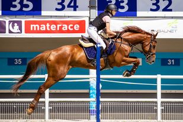

24.11.2020
Co jest lepsze?
Każdy jeździec wie, że owijki bądź ochraniacze to niezbędny element w pace dla Naszego konia czy to na zawody czy na codzienne jazdy. Pierwszą funkcją o jakiej myślimy w ich zastosowaniu to ochrona końskich nóg. Każdy chce zrobić to w jak najlepszy sposób tylko skąd wiemy czego użyć i co najlepiej zadziała dla Naszego konia?
Dzisiaj przekażemy Wam kilka wskazówek dotyczących właśnie tej kwestii. Może zacznijmy od podziału na jakie dzielimy owijki. Na rynku dostępne są polarowe, elastyczne bądź kompromis pomiędzy tymi dwoma rodzajami jakim jest owijka polarowo-elastyczna.
Owijki są bardzo dobrym rozwiązaniem na jazdę po płaskim kiedy nawet jej odwinięcie nie spowodowałoby poważnego wypadku. No właśnie, z owijek można tworzyć bardzo ładne komplety dobierając je pod kolor sprzętu, chronią ścięgna Naszych koni przed mikro-urazami, ale mają też wady i niestety bardzo łatwo jest zrobić nimi krzywdę kiedy stosowane są przez niedoświadczone osoby. Prawidłowe zawinięcie to klucz do sukcesu, ale też warto zapamiętać, że owijki polarowe na przykład średnio sprawdzą Nam się w lecie kiedy temperatura jest znacznie wyższa i może ona mocno rozgrzać kończynę.
Owijki elastyczne z kolei zapewnią Nam większe bezpieczeństwo jeśli chodzi o zsunięcie się z nogi niż poprzedniczki, ale przy ich zakładaniu nie wolno zapomnieć o stosowaniu podkładek, bo bez nich mogą doprowadzić one do braku przepływu krwi.
Połączenie tych dwóch typów w owijkę polarowo-elastyczną zapewnia Nam kontakt miękkiej części z końską nogą, a na zewnątrz wtedy zostaje materiał elastyczny, który stabilizuje ścięgna. Tutaj jednak tak samo pozostaje ryzyko przegrzania nogi i oczywiście nieprawidłowego zawinięcia.
Używanie owijek polecam, dlatego bardziej doświadczonym, a jeśli mniej to tylko pod okiem kogoś doświadczonego, żeby mógł w razie potrzeby skorygować błąd. Choć niedługo planujemy zrobić filmik instruktażowy, więc koniecznie sprawdzajcie nasze relacje.